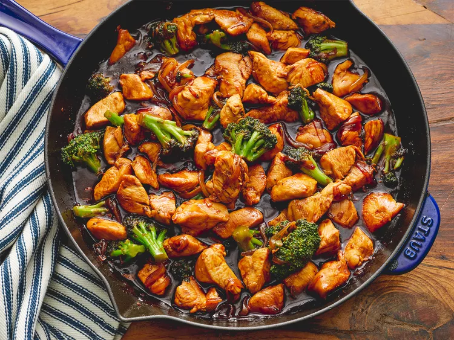

Brocolli and Chicken Stir Fry

Description
This Brocolli and Chicken Stir Fry is perfect for a quick after work dinner. It's super easy and there aren't too many ingredients that you won't already have in your pantry. Personally, I like to have it over white rice, but the base is up to you! And, everything holds great in the fridge as leftovers for tomorrows lunch.
Ingredients
- ⅔ cup soy sauce
- ¼ cup brown sugar
- ½ teaspoon ground ginger
- 1 pinch red pepper flakes, or to taste
- 2 tablespoons water
- 2 tablespoons cornstarch
- 2 teaspoons vegetable oil, or to taste
- 3 skinless, boneless chicken breast halves, cut into chunks
- 1 onion, sliced
- 3 cups broccoli florets
Directions
- Gather all ingredients.
- Stir soy sauce, brown sugar, ginger, and red pepper flakes together in a bowl until sugar dissolves. Mix water and cornstarch together in a small bowl; stir with a whisk until cornstarch dissolves completely.
- Heat oil in a large skillet over high heat. Fry chicken and onion in hot oil until chicken is no longer pink in the center and onion is tender, 5 to 7 minutes.
- Stir in broccoli with chicken and onion; sauté until broccoli is hot, about 5 minutes.
- Push chicken and vegetable mixture to the side of the skillet. Pour soy sauce mixture into the vacant part of the skillet. Stir cornstarch slurry into soy sauce mixture until the color is consistent.
- Move chicken and vegetables back into the center of the pan; sauté until sauce thickens and coats chicken and vegetables, about 5 minutes more.